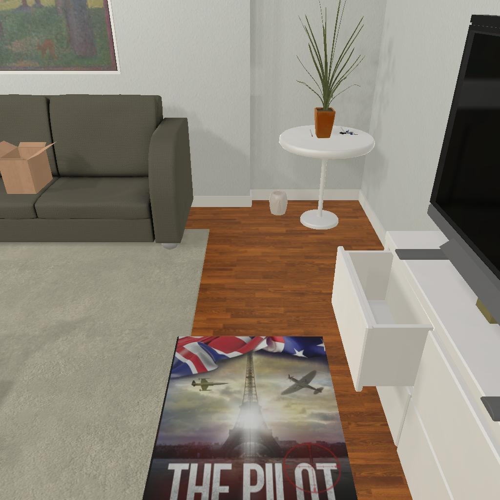

---------------------------------------------------------task: 5---------------------------------------------------------
--------------------------------------------------------------------------------------------------------------------------------------------------------------------
--------------------------------------------------------------------------------------------------------------------------------------------------------------------
Step:--------------------------------------------------------------------------17-------------------------------------------------------------------------------
----------------------------------------
VLM Prompt:
**Task**
Please perform as an embodied AI agent. Our final objective is to put some book on armchair. Below is the plan for completing the task, the current observation, alongside historical data and admissible actions for the next step. Please determine the best action for the next step!
**Plan**
Below is a detailed step-by-step plan to complete the task.
1. Find a book.
2. Pick up the book.
3. Find an armchair.
4. Place the picked-up book on the armchair.
5. Find another book.
6. Pick up the book.
7. Return to the previously located armchair.
8. Place the picked-up book on the armchair with the first book.
**Current Observation**
Displayed is an image capturing the current position of the agent.
**History Information**
Displayed are the previous observations with their corresponding actions.
Current State 1:
1. Place: Sofa area
2. Step Index in Plan: 1
3. Objects: Sofa, cardboard box, smartphone
4. Action: Go to armchair 1
Current State 2:
1. Place: Sofa area
2. Step Index in Plan: 1
3. Objects: Sofa, cardboard box, smartphone
4. Action: Go to drawer 1
Current State 3:
1. Place: Unknown
2. Step Index in Plan: First step
3. Objects: Sofa, side table, coffee table
4. Action: Go to sidetable 1
Current State 4:
1. Place: Not specified in the context provided
2. Step Index in Plan: 1
3. Objects: None observed/relevant to the current task
4. Action: Go to dresser 1
Current State 5:
1. Place: Room with Dresser
2. Step Index in Plan: 1
3. Objects: Dresser 1, Book 1
4. Action: Take book 1 from dresser 1
Current State 6:
1. Place: In a room with an armchair in the distance
2. Step Index in Plan: 4
3. Objects: Book, Armchair
4. Action: Go to armchair 1
Current State 7:
1. Place: In front of an armchair
2. Step Index in Plan: 4
3. Objects: Book ("The Pilot")
4. Action: Put book 1 in/on armchair 1
Current State 8:
1. Place: Armchair
2. Step Index in Plan: 5
3. Objects: The Pilot (book)
4. Action: Go to dresser 1
Current State 9:
1. Place: On top of dresser 1
2. Step Index in Plan: 5
3. Objects: Book ("The Pilot")
4. Action: Go to drawer 1
Current State 10:
1. Place: Room with an armchair
2. Step Index in Plan: 5
3. Objects: Armchair, Book titled "The Pilot"
4. Action: Go to drawer 2
Current State 11:
1. Place: Same room with the armchair
2. Step Index in Plan: 5
3. Objects: Armchair, side table with a plant, coffee table
4. Action: Go to drawer 3
Current State 12:
1. Place: Unknown (not specified in the context)
2. Step Index in Plan: 5
3. Objects: Book titled "The Pilot"
4. Action: Go to coffeetable 1 or Go to sidetable 1
Current State 13:
1. Place: Room with a sofa, cardboard box, side table with a plant, and a coffee table
2. Step Index in Plan: 5
3. Objects: Sofa, cardboard box, side table, plant, coffee table
4. Action: Go to dresser 1
Current State 14:
1. Place: Room with an armchair and a book titled "The Pilot"
2. Step Index in Plan: 5
3. Objects: Book ("The Pilot"), Armchair
4. Action: Go to drawer 1
Current State 15:
1. Place: Armchair area
2. Step Index in Plan: 5
3. Objects: Armchair, side table, plant, coffee table, drawer 1
4. Action: Open drawer 1
Current State 16:
1. Place: Room with an armchair, side table with a plant, and a coffee table
2. Step Index in Plan: 6
3. Objects: "The Pilot" book, armchair, side table, plant, coffee table, drawers (2, 3, 4), side tables (2, 3)
4. Action: go to drawer 2
Current State 17:
1. Place: Unknown
2. Step Index in Plan: 6
3. Objects: Armchair, side table, plant
4. Action: Go to drawer 3
**Admissible Actions**
(1): go to armchair 1
(2): go to sofa 1
(3): go to coffeetable 1
(4): go to drawer 1
(5): go to sidetable 1
(6): go to dresser 1
(7): go to drawer 4
(8): go to sidetable 2
(9): go to sidetable 3
(10): open drawer 3
(11): close drawer 3
(12): put book 1 in/on drawer 3
(13): examine book 1
**Analysis Guideline**
1. Analyze the **History Information** and determine our current step in the plan and our current place.
2. List all visible objects related to the task in the current observation.
3. Analyze the objects in the current observation based on the history and the requirements for the current step, and then determine if we can complete the step with the current observation.
4. Analyze and decide on the most appropriate action to take.
5. Summarize the analysis using the following format: "Analysis: [The summarization of the analysis], The Most Appropriate Action: (i which is the integer.): [Selected action]"
**Notes**
1. We must complete each step of the plan in order and cannot skip steps when the previous ones are not finished.
2. For "Go to" actions listed as "go to xxx [n]", interpret this as there are n distinct actions available: "go to xxx 1", "go to xxx 2", ..., "go to xxx n". Select one specific action from these options instead of using "go to xxx [n]".
3. If receptacles such as drawers, cabinets, and so forth are closed in the current observation, we may try to open them.
4. Pay attention to synonyms and ensure clarity in the terms used.
5. If there is no history available, we are at the first step and the current place is "Unknown".
6. The most appropriate action must be in the **Admissible Actions**, and we cannot generate a new action that is not in the **Admissible Actions**.
**Answer**
Please select the most suitable action by following the **Analysis Guideline**, keeping the above **Notes** in mind.
----------------------------------------
----------------------------------------
VLM Response:
Analysis: The current observation shows a book titled "The Pilot" on the floor, which is the book we previously placed on the armchair (as per historical data in Current State 7). This suggests we are at step 5 in the plan, which is to find another book. The visible objects related to the task are the book "The Pilot," an armchair, a sofa, a side table with a plant, a coffee table, and a drawer. Since we are at step 5, we need to find another book, and the current observation does not show any new book other than the one we have already placed. Therefore, we cannot complete the current step with the current observation. The most appropriate action to find another book would be to go to a place where we have not searched yet, such as a drawer or a dresser where books are likely to be stored.
The Most Appropriate Action: (6): go to dresser 1
----------------------------------------
----------------------------------------
>>> Refine VLM Response and Get Pure Action: go to dresser 1
----------------------------------------
-----------------------------------------------------------------
Running time: 8.450711965560913 seconds
Total Money: 2.3546399999999994
-----------------------------------------------------------------
-----------------------------------------------------------------
Summarization Prompt:
**Context**
Analysis: The current observation shows a book titled "The Pilot" on the floor, which is the book we previously placed on the armchair (as per historical data in Current State 7). This suggests we are at step 5 in the plan, which is to find another book. The visible objects related to the task are the book "The Pilot," an armchair, a sofa, a side table with a plant, a coffee table, and a drawer. Since we are at step 5, we need to find another book, and the current observation does not show any new book other than the one we have already placed. Therefore, we cannot complete the current step with the current observation. The most appropriate action to find another book would be to go to a place where we have not searched yet, such as a drawer or a dresser where books are likely to be stored.
The Most Appropriate Action: (6): go to dresser 1
**Summary Format**
1. Place: [Specify the current location]
2. Step Index in Plan: [Dispkay the current step number in the plan before taking the current action]
3. Objects: [List the objects relevant to the task]
4. Action: [Describe the most appropriate action without the "(x)" and keep the integer of the object]
Please analyze the **Context** and summarize the analysis using the **Summary Format**.
-----------------------------------------------------------------
-----------------------------------------------------------------
Summarization Response:
1. Place: Room with the armchair where "The Pilot" book was previously placed
2. Step Index in Plan: 5
3. Objects: "The Pilot" book, armchair, sofa, side table with plant, coffee table, drawer
4. Action: Go to dresser 1
-----------------------------------------------------------------
-----------------------------------------------------------------
Text Observation:You arrive at loc 5. On the dresser 1, you see a television 1.
-----------------------------------------------------------------
UNSUCCEED